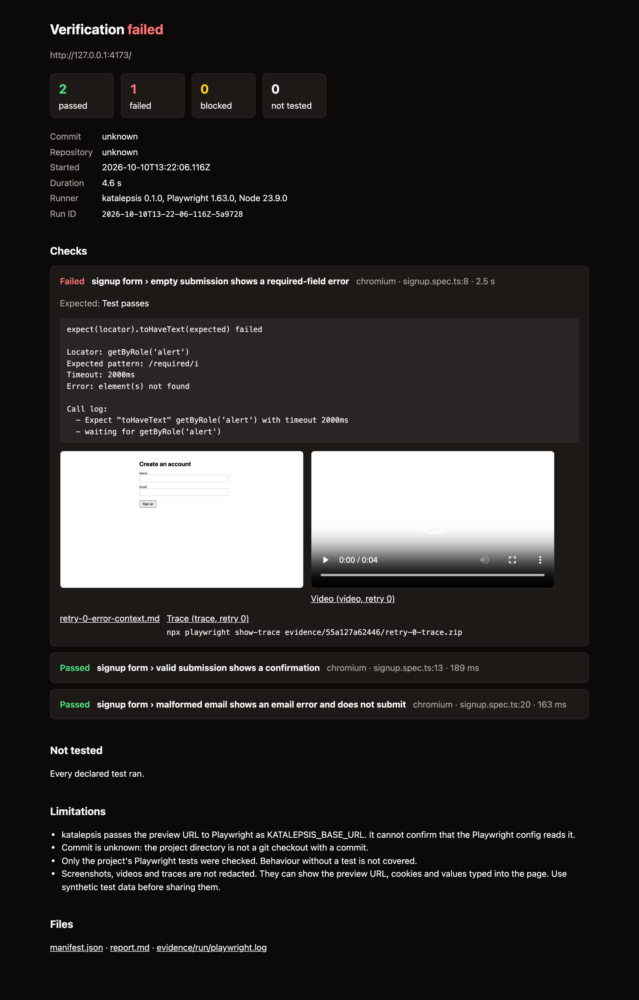

YOUR PLAYWRIGHT TESTS, AGAINST THE PREVIEWREAL OUTPUT
Your existing Playwright tests run against the preview, with no AI key needed.

The failure, with the screenshot, video and trace next to it.
CHECKS.JSON
{
"id": "empty-form",
"name": "Empty form validation",
"intent": "Submit the signup form without filling it",
"passCondition": "A required-field error is visible"
}
AGENT CHECKS, YOUR OWN KEYREAL OUTPUT
When there is no test yet, you describe the check and a model clicks through it.
Agent checks only pass when the browser agrees
FAILEDempty-form a1 FAILED: role "alert" is visible (0 visible match(es) after waiting up to 3s)
PASSEDvalid-submission a1 PASSED: role "status" is visible (1 visible match(es) after waiting up to
3s)
To pass, it has to cite an assertion that ran in the browser and shows something it changed.
PREVIEW DOWNREAL OUTPUT
If the preview is down, you get one blocked run instead of three fake failures.
katalepsis
Open source, and it runs on your machine
Built with Playwright, Effect and the AI SDK · by Osa Ogbemudia